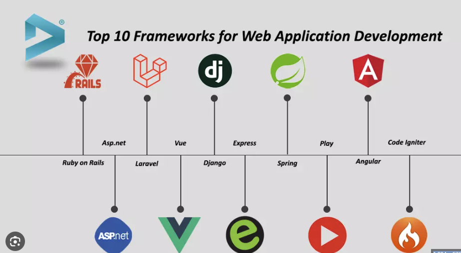

Entorn Web, Frameworks i Biblioteques
En el desenvolupament web modern no programem des de zero — fem servir estructures ja creades que ens estalvien temps i ens donen seguretat.
Què és un Framework Web?
Un framework és un conjunt de biblioteques, eines i regles de disseny ja preparades que ens faciliten la creació d'una aplicació.
Per què fer-los servir?
- Eviten el "codi espaguetti" (desendreçat i impossible de mantenir)
- Estructura estàndard: un nou treballador entén l'arquitectura el primer dia
- Ja incorporen mecanismes contra atacs: injeccions SQL, CSRF, etc.
Inconvenient
Tenen una corba d'aprenentatge. Requereixen temps d'estudi abans de ser productiu.

Comparativa de Frameworks populars
L'ecosistema Python: Aïllament i Dependències
Quan programem, utilitzem codi d'altra gent (biblioteques). Instal·lar aquestes biblioteques directament al sistema operatiu (instal·lació global) és un greu error.
La solució: Entorns Virtuals i Gestors de Paquets
Entorns Virtuals
Eina integrada a Python. Crea "bombolles" aïllades per a cada projecte. El projecte A tindrà el seu propi Python i les seves pròpies biblioteques, separades del projecte B.
python -m venv envGestor de Paquets
Automatitza la descàrrega i instal·lació de biblioteques des dels repositoris oficials d'internet (PyPI).
pip install django==4.2requirements.txt
Llista en text pla de totes les biblioteques i les seves versions exactes. Permet que qualsevol company pugui reproduir l'entorn.
pip install -r requirements.txtrequirements.txt de Python
és equivalent al package.json de Node.js. La carpeta node_modules/
és equivalent a env/. Ambdues carpetes s'han d'ignorar al
.gitignore!
🗂️ Resum Ràpid — Mòdul 3
venv.
python -m venv env
pip install django==4.2
package.json de Node.